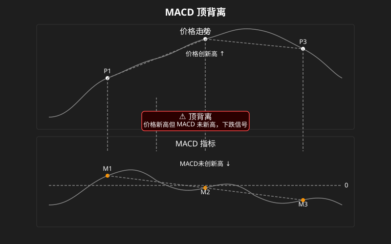
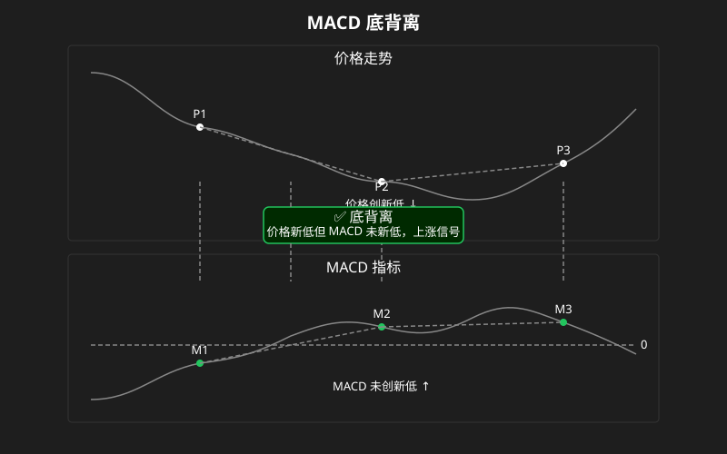

MACD（异同移动平均线）
什么是 MACD？
MACD 是 Moving Average Convergence Divergence 的缩写，中文叫”指数平滑异同移动平均线”。名字很长，但理解起来不难——它就是利用两条均线的差值来分析趋势强弱和转折的指标。
MACD 是目前全球使用最广泛的趋势指标之一，几乎所有股票软件都默认显示它。
MACD 的三大组成
MACD 由三个部分组成，看图时从上到下依次是：
1. 快线（DIF）
- 计算公式：EMA(12) - EMA(26)
- 短期 EMA 减去长期 EMA，差值越大说明短期上涨越猛
- DIF 是 MACD 中最灵敏的线
2. 慢线（DEA）
- DIF 的平滑移动平均线（通常取 9 日）
- 比 DIF 更平滑，反应慢一些
- 可以理解为 DIF 的”均线”
3. 柱状图（MACD 柱 / 能量柱）
- 计算：DIF - DEA，以柱状图显示
- DIF 在 DEA 上方 → 红柱（正数），代表多头力量占优
- DIF 在 DEA 下方 → 绿柱（负数），代表空头力量占优
- 柱子变长说明趋势在加速，柱子变短说明趋势在减弱
DIF（快线）—— 灵敏
↓
DEA（慢线）—— 平滑
↓
柱状图（红/绿）—— 能量变化
金叉与死叉（分 0 轴上下）
MACD 的金叉死叉和均线类似，但多了一个维度：0 轴。
金叉（DIF 上穿 DEA）
0 轴上方金叉 —— 🔥 最强信号
- 已经处于多头市场
- DIF 回调后再次向上穿越 DEA
- 说明回调结束，上涨延续
- 称为”空中加油”
0 轴下方金叉 —— 反弹信号
- 处于空头市场
- 属于超跌反弹
- 可能只是反弹，未必反转
死叉（DIF 下穿 DEA）
0 轴下方死叉 —— ⚠️ 最强卖出信号
- 本来就弱势，现在进一步确认下跌
0 轴上方死叉 —— 回调信号
- 上涨趋势中的回调
- 不一定反转，可能只是短暂调整
核心口诀： 0 轴上方金叉买，0 轴下方死叉卖。0 轴本身也是重要的支撑和压力位。
顶背离 vs 底背离（最重要信号！）
背离是 MACD 最有价值的应用，它告诉你趋势可能要反转了。
顶背离（看跌信号）

含义： 价格虽然在涨，但上涨的动能（DIF）在减弱。像一个人跑步冲刺，速度越来越慢——虽然还在向前，但马上要停了。
操作： 顶背离出现 → 减仓或卖出（尤其是连续 2 次顶背离，可靠性极高）
底背离（看涨信号）

含义： 价格虽然在跌，但下跌的动能越来越弱。空头力量衰竭，多头可能随时反击。
操作： 底背离出现 → 关注买入机会
背离的使用要点
| 要点 | 说明 |
|---|---|
| 周期越大越可靠 | 日线背离 > 60 分钟背离 > 15 分钟背离 |
| 二次背离更可靠 | 连续两次背离，反转概率极高 |
| 必须结合趋势 | 大趋势向上时，顶背离可能只是横盘调整 |
| DIF 新高/新低才有效 | 股价新高但 DIF 平着走不算背离 |
默认参数：12 / 26 / 9
这是 MACD 最经典的参数组合，由 MACD 发明者 Gerald Appel 设定：
- 12：快线 EMA 的周期（12 日）
- 26：慢线 EMA 的周期（26 日）
- 9：DEA 的平滑周期（9 日）
对于短线交易者，可以调整为 5/13/1（更灵敏）；对于长线投资者，可以调整为 21/55/8（更平滑）。
MACD 与均线的配合使用
MACD 本质上就是均线的衍生品，两者配合效果极好：
| 均线状态 | MACD 信号 | 操作建议 |
|---|---|---|
| 多头排列 + 价格在 200 日线上 | 0 轴上方金叉 | 🔥 强烈买入 |
| 空头排列 + 价格在 200 日线下 | 0 轴下方死叉 | ⚠️ 坚决卖出 |
| 均线缠绕（震荡） | 金叉死叉频繁 | 放弃 MACD，用布林带 |
| 均线多头排列 | DIF 在 0 轴上方运行 | 确认强势，持股为主 |
一句话总结： 用均线定大方向，用 MACD 定买卖时机。
实战小技巧
-
背离不是立刻反转 —— 顶背离后可能还有顶背离，股价还能再涨几天甚至几周。不要看到背离就马上满仓做空，等一根确认 K 线（比如跌破短期均线）再行动。
-
红绿柱比金叉死叉更快 —— 柱状图开始缩短时，往往比金叉死叉提前给出信号。红柱缩短 = 上涨动能减弱，绿柱缩短 = 下跌动能减弱。
-
0 轴的重要性 —— 很多新手只盯着金叉死叉，忽略了 0 轴的位置。0 轴上的金叉和 0 轴下的金叉，意义天差地别。
-
参数可以调，但别乱调 —— 建议先用默认参数（12/26/9）至少看 100 次实盘，理解了之后再尝试调整参数。
-
MACD 在单边市中好用，在震荡市中不准 —— 和均线一样，MACD 本质上是趋势指标。市场横盘震荡时，MACD 的信号大多是错的。